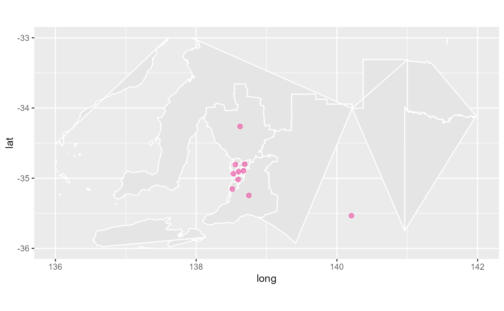

The dorling algorithm doesn't work on the entire country, because it is very clustered at the cities. To get a reasonable cartogram we need to extract out the cities, expand these with dorling independently. This function does the extraction.
aec_extract_f(aec_data, ctr = c(151.2, -33.8), expand = c(3, 4.5), ...)
| aec_data | data with centroids of electoral divisions |
|---|---|
| ctr | centroids of subset |
| expand | how large a chunk to cut out |
| ... | other arguments |
library(dplyr) library(ggplot2) nat_map16 <- nat_map_download(2016) nat_data16 <- nat_data_download(2016) nat_data16 <- nat_data16 %>% select(-c(x,y)) # remove existing cartogram coordinates adelaide <- aec_extract_f(nat_data16, ctr=c(138.6, -34.9), expand=c(2,3)) ggplot(data=nat_map16) + geom_polygon(aes(x=long, y=lat, group=group, order=order), fill="grey90", colour="white") + geom_point(data=adelaide, aes(x=long_c, y=lat_c), size=2, alpha=0.4, colour="#f0027f") + xlim(c(136, 142)) + ylim(-36, -33) + coord_equal()#> Warning: Ignoring unknown aesthetics: order